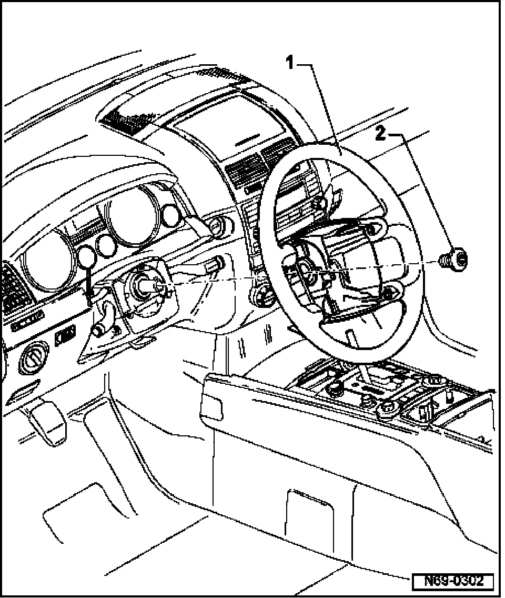

Steering Wheel, Removing and Installing
Steering Wheel, Removing And Installing
Removing
- Remove driver airbag unit 69-4, Driver airbag unit, removing and installing
- Turn steering wheel - 1 - to center position (wheels point straight ahead).

- Unscrew bolt - 2 - and pull steering wheel off steering column.
Installing
- Place steering wheel onto steering column.
- Center markings on steering wheel and steering column must align.
- Coil connector mounting and pin must be positioned in opening provided at base of steering wheel.
- Secure steering wheel with bolt - 2 -. Torque setting: 50 Nm.
- Center punch bolt.

- Bolt can be used five times.